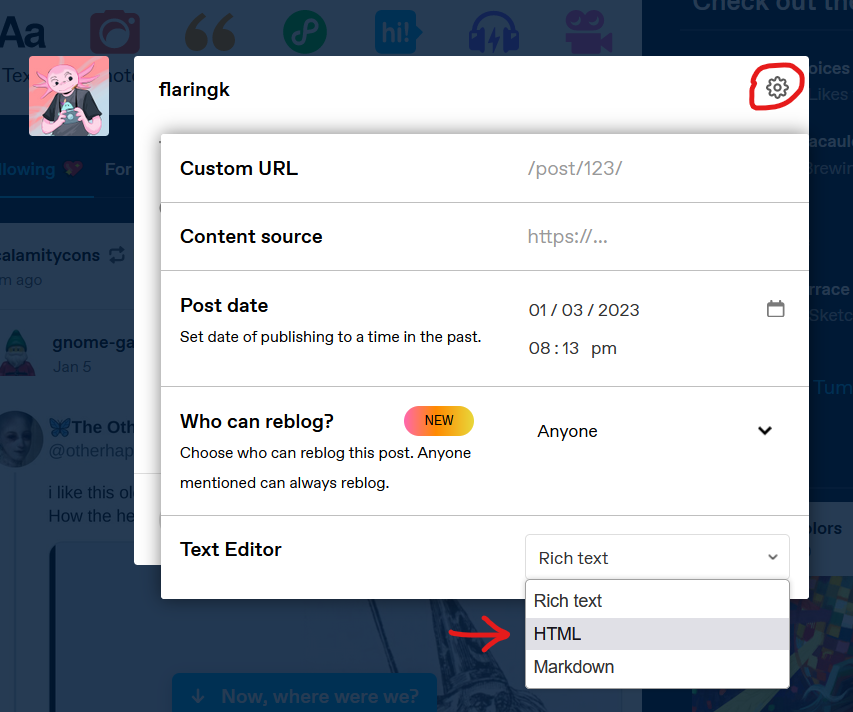
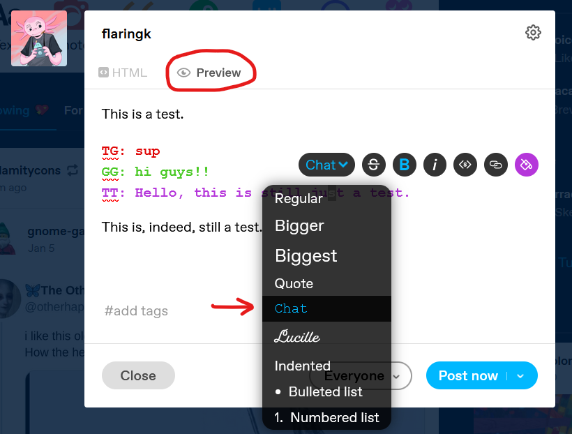

Homestuck 5+Horse is a tool to format Homestuck style dialogue. Entering homestuck style dialogue in the left text area will generate formatted homestuck dialogue in the right area.
If a line begins with a handle, it will be formatted as a pesterlog.
If that handle has an associated colour class, that specific line will be formatted in that colour. These can be viewed and edited by pressing the Edit Formats button.
Handles that include "-" will have them removed when they are formatted.
The {Handle} syntax will be expanded into the corrisponding chumHandle, provided the handle has an associated handle. These can also be viewed and edited by pressing the Edit Formats button. This will also mark the paragraph as a pesterlog.
Adding P, F or C before the Handle will add PAST, FUTURE and CURRENT respectively before the chumHandle. This will also work as message handles
Pesterlogs can be also manually assinged by writing %LOG% at the top of a paragraph.
Formats can also be called outside of pesterlogs using the $Handle syntax, and then closed with $- or at the end of the text line.
Format colours can be used without the pesterlog font with the $$Handle syntax, and then also closed with $- or at the end of a text line. Using this will make your work incompatible with the AO3 Homestuck workskin. These sections have the html class of [Handle]-plain
Once finished, press the Copy Html & CSS button to copy the generated HTML. Then simply paste that in to your fanficion site of choice, and ensure the associated workskin or CSS is applied. If you are using the default formatting options and putting your work on AO3, all you need to do is apply the standard Homestuck workskin. Otherwise you will need to make your own workskin.
Homestuck 5+Horse is a mod of FlaringK's Homestuck5+, which was inspired by homestuck5 created by itsdave on AO3.
This is just Homestuck 5+ but with one added fomrat.
Dialogue written by nefola
Homestuck 5+ Made by FlaringK
Basic options
Character Formats
Edit the formats' names and chumhandle
Add Formats
New formats may not be included in AO3's standard homstuck workskin, and will require a custom workskin to be compatible. The format class name will be the html class given to the span.
Add dual format
Dual formats will format pesterlog handles as diffrent colours then their messages. Dual formats can only be composed of existing formats, so you will have to add each colour of a new dual format before combining them below.
Import Formats
Formats will automatically be saved in local storage when they are changed, however you can import a group of formats by pasting in it's JSON string below.
HTML
CSS
HTML
HTML (JSON compatible)
Text
HTML
How to format your tumblr post
Posting works on tumblr is a tad tricky due to the tumblr editor being... sub-optimal. On the tumblr post editor, click the gear icon in the corner and change your text editor to HTML. Then paste in your work.

After you paste your work in, enter the Preview tab. For each pesterlog in your work, highlight any part of it's text and change it's paragraph type to Chat.

If you go back and edit the pesterlog, you will have to reapply the Chat format.
The below output has been styled in such a way that copying it and pasting it into google docs will preserve it's formatting. This will not work on Firefox, as Firefox strips text of it's formatting when copied from a web page.
Output (Select and copy all)
HTML
HTML
HTML
CSS